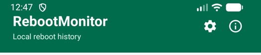
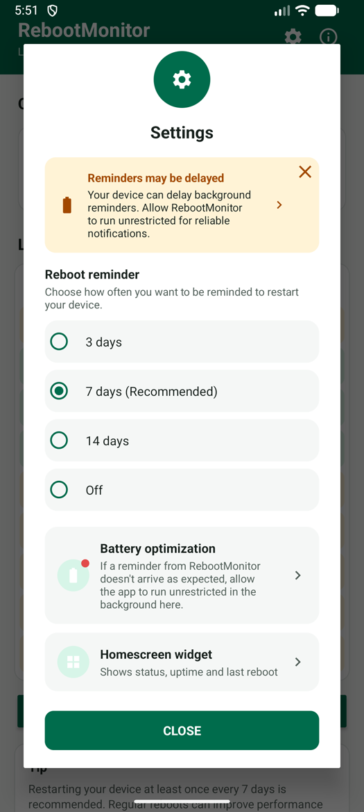
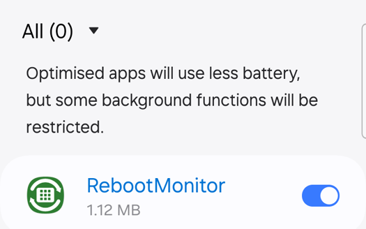
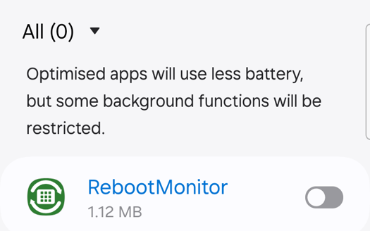
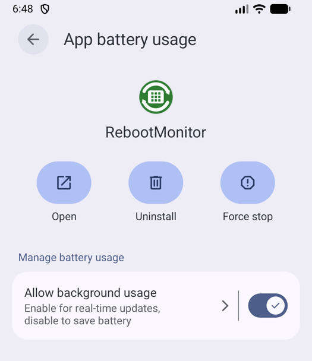
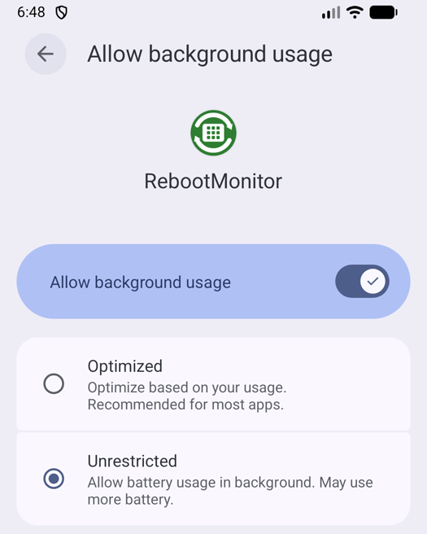

Why does this happen?
It's not a bug — it's your phone trying to save battery.
Android phones can restrict what apps are allowed to do while they're not open, to make the battery last longer. RebootMonitor needs to check your device's status once a day in the background. If your phone restricts it too much, that daily check can be delayed — sometimes by several days.
Good news: fixing it takes less than a minute, and RebootMonitor still uses almost no battery either way — this setting just controls how strictly your phone limits it.
Prefer to watch? Pick the 1-minute video for your phone
See every tap, from the yellow card to the finished fix.
Watch on YouTube
Watch on YouTube
Open the gear icon
Open RebootMonitor. In the top right corner, next to the app name, tap the gear (⚙) icon.


Look for the yellow card
If your phone could delay reminders, you'll see a yellow card at the top that says "Reminders may be delayed."
If you don't see this card, your phone already allows RebootMonitor to run normally — nothing to do!
Tap the card
Tap anywhere on the yellow card. This opens your phone's own battery settings screen — it's a standard Android screen, not part of the app.
What it looks like depends on your phone. Samsung shows a list of apps with a switch; Google Pixel and most other phones show a page for RebootMonitor. Follow the part below that matches your phone.

4Allow RebootMonitor to run in the background
Pick the part that looks like your phone. Both do the same thing: they tell Android not to hold RebootMonitor back.
Samsung phones: turn the switch off
Find RebootMonitor in the list and switch it off. Samsung calls this "Optimise battery usage" — off means RebootMonitor is not limited. Reminders will now arrive on time.

Google Pixel and most other phones: choose "Unrestricted"
You'll see a page for RebootMonitor with a row called "Allow background usage".
- If the switch on that row is off, switch it on.
- Tap the row itself (on the arrow or the text). A second page opens.
- Choose "Unrestricted".


"Optimized" is not enough. It still lets Android delay RebootMonitor in the background, so the yellow card will stay. Only "Unrestricted" (or Samsung's switch turned off) clears it.
Phone brands word this differently. Other names you may see are "Allow background activity," "No restrictions," or "Don't optimize." Whatever the wording, you're looking for the option that means RebootMonitor is not limited.
That's it — you're done
Go back into RebootMonitor's settings and the yellow card will be gone. Your reminders will now arrive right on schedule.